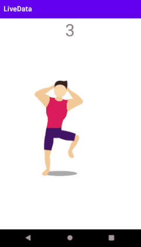

LiveData es una classe para contener datos observables.
Está diseñada específicamente para ser utilizada en Activities, Fragments o Servicios, de forma
que únicamente notifica a los observadores si la Activity, Fragment o Servicio está en ejecución.
Desarrollaremos una app que consiste en un Entrenador de gimnasia.
